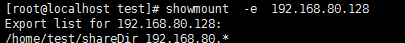

nfs服务器¶
参考文档：
ftp服务器的全称是net file system网络问卷系统，它的主要功能就是：允许网络中计算机之间能够通过TCP/IP网络共享资源
nfs服务器的搭建我们这里选择使用
- CentOS下：
nfs-utils和rpcbind - Ubuntu下：
nfs-common
其搭建基本流程是：
0x00 nfs工具安装¶
不同linux发行版的安装方式不同
Debian/Ubuntu系列安装方式
# apt-get安装
$sudo apt-get install nfs-common
RedHat/Fedra/CentOs系列安装方式
# yum安装
$yum install nfs-utils
$yum install rpcbind
0x01 服务端配置¶
CentOS系列服务端配置如下：
创建共享目录；
mkdir /home/test/shareDir更改目录权限：
chmod -R a+w shareDir/更改配置文件：
vim /etc/exports添加/home/test/shareDir 192.168.80.*(rw,async,no_root_squash)，每个字段的意思是：/home：表示需要共享的目录192.168.80.*：指定哪些用户可以访问*：所有可以ping同该主机的用户192.168.1.*：指定网段，在该网段中的用户可以挂载192.168.1.12：只有该用户能挂载
(ro,sync,no_root_squash)：权限ro: 只读rw: 读写sync: 同步no_root_squash：不降低root用户的权限
其它信息可以通过
man 5 exports进行查看
启动服务
systemctl start rpcbindsystemctl start nfs
开启rpcbind防火墙端口
iptables -I INPUT -p udp --dport 111 -j ACCEPTiptables -I INPUT -p tcp --dport 111 -j ACCEPT
开发nfs防火墙端口
iptables -I INPUT -p udp --dport 2049 -j ACCEPTiptables -I INPUT -p tcp --dport 2049 -j ACCEPT
最后我们通过showmount -e 192.168.80.128命令来查看服务端状态，确认之前创建的目录是否被共享

0x02 客户端挂载¶
CentOS系列客户端配置如下：
手动将共享目录挂载到本地指定目录下
mount 192.168.80.128:/home/test/shareDir /tmp/test/
配置开机自动挂载
echo "192.168.80.128:/home/test/shareDir /tmp/test/ nfs defaults 0 0" >> /etc/fstab
共享测试
- 客户端创建文件：
touch /tmp/test/1.txt - 服务端是否同步：
ll /home/test/shareDir
- 客户端创建文件：